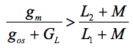

Oscil·ladors
Es pot dir que els oscil·ladors constitueixen el cor dels sistemes radioelètrics de comunicacions. Són els circuits mitjançant els quals es generen les portadores que seran modulades per les senyals d'informació i les fonts de senyal de les que s'obtenen els senyals de sincronisme o de rellotge en els sistemes digitals. En el cas més general, un oscil·lador genera una senyal sinusoïdal de freqüència i amplitud constants. Ja que les senyals generades pels oscil·ladors constitueixen la referència de freqüència en els sistemes de comunicacions resulta indispensable que la freqüència de la senyal generada per ells sigui efectivament constant, és a dir, que no variï, particularment en els oscil·ladors de transmissors radioelèctrics. L'estabilitat en freqüència s'expressa en parts per milió o ppm, el que equival expressar la variació de freqüència en Hz / MHz. Així, un oscil·lador de 100 MHz amb una estabilitat, per exemple de 0.1 ppm, vol dir que pot variar la freqüència en ± 10 Hz respecte a la freqüència nominal de 100 MHz.
Principi general de funcionament
Hi ha nombrosos circuits oscil·ladors, designats amb freqüència amb el nom dels seus inventors, per exemple, Hartley, Colpitts, Armstrong, Clapp, Pierce, etc. El principi de funcionament és similar en tots els casos i és important entendre aquest concepte, ja que molts circuits que suposadament no han oscil · lar, oscil · len en determinades condicions. Tal és el cas dels amplificadors de RF. El principi general en què es basen els oscil·ladors és la retroalimentació positiva. El circuit genèric en blocs es mostra a la figura següent:
Oscil · lador retroalimentat
Estrictament, la funció del oscil·lador és convertir l'energia de corrent contínua de la font d'alimentació en energia útil de senyal. Encara que en la figura s'ha indicat una senyal d'entrada, aquesta entrada externa no existeix en la majoria dels oscil·ladors, de manera que tal semblaria que un oscil·lador no requereix de senyals externes d'entrada. Això és cert a mitges. La senyal d'entrada a un oscil·lador és el graó de tensió al aplicar-li el voltatge de la font d'alimentació, que juntament amb el soroll intern present al circuit, fa que aquest produeixi a la seva sortida una oscil·lació autosostinguda sense necessitat d'altres senyals d'entrada externes a ell.
L'energia de la font d'alimentació es converteix, per una banda, en una senyal oscil·latòria que és el senyal útil de sortida i, a més, subministra l'energia que consumeix el mateix circuit del oscil·lador. Aquest, bàsicament està constituït per un amplificador que compensa les pèrdues internes en el senyal i que, a més sol tenir incorporat un circuit capaç de mantenir la freqüència d'oscilació, en general algun tipus de circuit ressonant, bé sigui un circuit sintonitzat LC, un ressonador a cristall, una cavitat ressonant, etc. Finalment en tot oscil·lador és necessària una xarxa de retroalimentació, que s'ajusta a dos criteris designats com a criteris de Barkhausen. Primer, el senyal ha d'estar exactament en fase amb el senyal d'entrada i, segon, el guany total del llaç tancat per l'amplificador i la xarxa de retroalimentació, ha de ser exactament igual a 1. Això, matemàticament s'expressa com que Avβ = 1, en què Av i β són els guanys de l'amplificador i de la xarxa de retroalimentació respectivament.
Oscil·lador Hartley
En aquest oscil·lador, igual que en el Colpitts, la relació necessària de fase entre la sortida i l'entrada s'aconsegueix connectant l'emissor i el col·lector als extrems oposats d'un circuit sintonitzat. Entre els circuits d'entrada i sortida, la inductancia mútua ha de tenir la polaritat adequada. En els circuits sintonitzats de sortida i entrada la reactància ha de ser inductiva a la freqüència de oscilació dedesitjada.
Oscil·lador Hartley
El circuit anterior oscil·la a una freqüència donada per:
s'ha de complir que:

On gm és la transconductància del transistor i gos seva conductància pròpia de sortida. GL és, en aquest cas, la conductància de càrrega connectada a la sortida del oscil·lador.
Oscil·lador Colpitts
És molt similar al Circuit Hartley. La diferència és que aquí es fan servir dos condensadors i una bobina i al Hartley, dues bobines i un condensaciódor.
Oscil·lador Colpitts
La freqüència d'oscilació del circuit Colpitts de la figura és:
Les expressions anteriors, per als dos circuits, suposen que l'amplificació del transistor és suficient per compensar les pèrdues en el propi circuit de l'oscil·lador i que la càrrega externa no introdueix cap defasament. L'amplificació de voltatge en aquestes condicions, ve donada per:
Oscil·ladors a cristall

Cristalls utilitzats en oscil·ladors i filtres
Un vidre piezoelèctric quan es sotmet a un esforç mecànic de pressió o deformació produeix una càrrega elèctrica oscil·latoria al llarg dels eixos de tall del vidre, que es comporta com un circuit ressonant amb una Q molt alta, generalment superior a 105, propietat que fa dels vidres elements molt importants per a la implementació d'oscil·ladors. Un cristall, com els mostrats a la figura de dalt, es comporta com un circuit ressonant el circuit equivalent es mostra a la figura següent:
Circuit equivalent d'un cristall
En aquest circuit, Cp representa la capacitat electrostatica entre els elèctrodes del vidre, mentre que el circuit en sèrie Ls-Cs-rs representa l'equivalent elèctric de la característica vibratòria del vidre. La inductància és l'equivalent elèctric de la massa cristal·lina que intervé de manera efectiva a la vibració. C, al seu torn, és l'equivalent elèctric de la compliancia mecànica i la resistència rs representa el equivalent elèctric del fregament.
Els valors dels components del circuit equivalent es proporcionin pels fabricants de vidres.